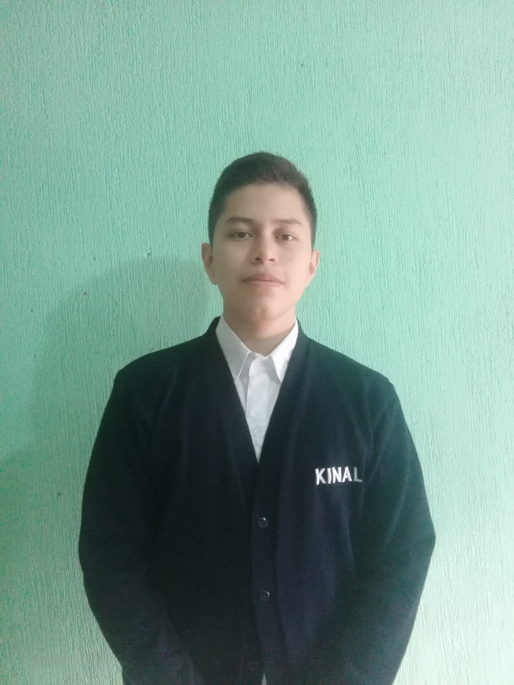
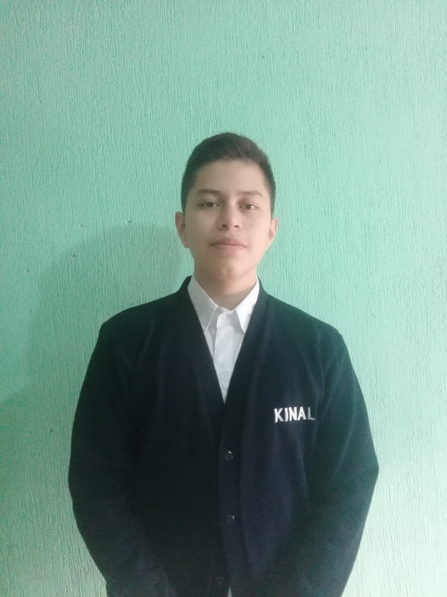

Lester René López Gálvez

Vive en Ciudad de Guatemala | Villa Nueva

Estudia en Fundación Kinal

Estado sentimental Soltero
Mi nombre es Lester René López Gálvez, tengo 18 años y nací el 29 de noviembre del año 2005 en el sanatorio Utatlán a las 8:30 a.m.
Soy el menor de tres hermanos. Mi infancia estuvo marcada por la diversión tanto en la escuela, como con mis amigos que vivían cerca de mi casa. Durante mi infancia desarrollé una pasión por el fútbol.
Mi trayectoria educativa ha sido diversa y enriquecedora. Comencé mi educación en la Escuela Oficial de Parvulos Las Margaritas para la preprimaria, seguí en la Escuela Oficial Rural Mixta El Búcaro para la primaria, y posteriormente asistí al Colegio Cristiano Animadab para mis estudios básicos. Actualmente, estoy cursando la educación diversificada en el Centro Educativo Técnico Laboral Kinal, donde me especializo en informática.
Para este año, mi principal meta es graduarme con un sólido conocimiento en informática y habilidades complementarias. Aspiro a obtener una experiencia práctica relevante, ya sea a través de programas de prácticas o mediante la adquisición de experiencia en el campo laboral. Mi objetivo es consolidar mis habilidades y conocimientos para abrirme paso en el mundo profesional y contribuir de manera significativa en el ámbito de la informática y la tecnología.
En cuanto a habilidades, me considero competente en diversas áreas relacionadas con la informática, incluyendo: - Programación: Poseo habilidades en lenguajes de programación como Java y JavaScript. - Diseño web: Tengo un poco experiencia en el diseño y desarrollo de sitios web utilizando HTML, CSS, y JavaScript. - Resolución de problemas: Me destaco por mi capacidad para analizar y resolver problemas de manera eficiente. - Trabajo en equipo: He demostrado habilidades para colaborar y trabajar en equipo, especialmente en proyectos de desarrollo de software.